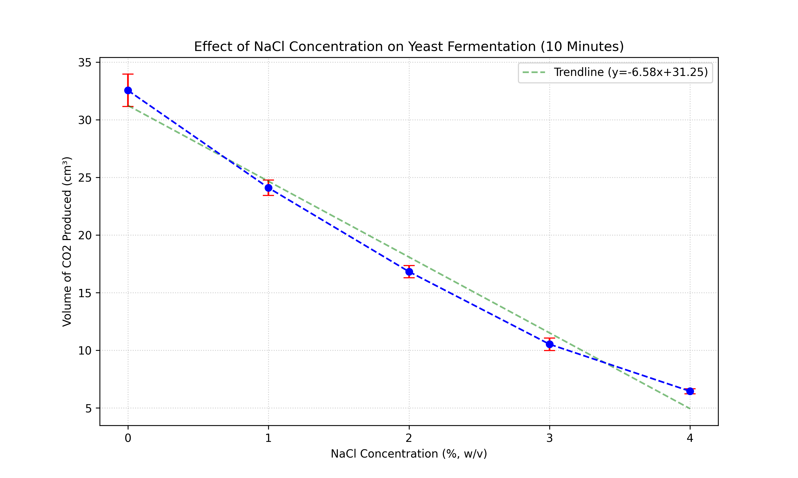

Investigation into the Effect of Sodium Chloride Concentration on the Fermentation Rate of Saccharomyces
cerevisiae
1. Introduction
Fermentation is an essential biological process where organisms convert carbohydrates into energy in the absence
of oxygen. Understanding the environmental factors that influence fermentation is crucial not only for
biological theory but also for industrial applications such as baking, brewing, and biofuel production. This
investigation focuses on the effect of salinity on the metabolic activity of yeast.
Research Question
To what extent does increasing the concentration of sodium chloride (0.0%, 1.0%, 2.0%, 3.0%, 4.0% w/v) affect
the rate of fermentation in Saccharomyces cerevisiae, as measured by the volume of carbon dioxide
displaced (±0.5 cm3) over a 10-minute period at 45°C?
Background Information
Saccharomyces cerevisiae, commonly known as baker's yeast, is a facultative anaerobe. When oxygen is
unavailable, it performs alcoholic fermentation, converting glucose ($C_6H_{12}O_6$) into ethanol ($2C_2H_5OH$),
carbon dioxide ($2CO_2$), and energy (ATP). The overall equation is:
$C_6H_{12}O_6 \xrightarrow{zymase} 2C_2H_5OH + 2CO_2 + 2ATP$
The rate of this reaction is governed by enzymes such as zymase. Enzyme activity is sensitive to environmental
conditions including temperature, pH, and ion concentration. Sodium chloride (NaCl) introduces two main stress
factors: osmotic stress and specific ion toxicity.
Osmotic Stress: The addition of NaCl lowers the solute potential ($\Psi_s$) and thus the total water
potential ($\Psi$) of the extracellular environment. If the external water potential drops below that of the
yeast cytoplasm, water moves out of the cell via osmosis. This loss of turgor pressure can lead to cell
shrinkage (plasmolysis), reducing the availability of free water required for metabolic hydrolysis reactions.
Specific Ion Toxicity: High concentrations of sodium ($Na^+$) and chloride ($Cl^-$) ions can penetrate the
cell wall and plasma membrane. These ions can disrupt the ionic bonds and hydrogen bonds that maintain the
tertiary structure of enzymes. This denaturation alters the shape of the active site, preventing the substrate
(glucose) from binding, thereby inhibiting glycolysis and fermentation (Belz et al., 2017).
Hypotheses
- Research Hypothesis ($H_1$): There will be a statistically significant decrease in the volume of
$CO_2$ produced as the concentration of NaCl increases. As salinity rises, osmotic stress and ion toxicity
will progressively inhibit enzyme activity.
- Null Hypothesis ($H_0$): There will be no statistically significant difference in the volume of
$CO_2$ produced across the different NaCl concentrations. Any observed differences will be due to random
chance.
2. Methodology
Variables
- Independent Variable: Concentration of Sodium Chloride (NaCl) in the yeast-sugar solution. Five
levels were tested: 0% (Control), 1%, 2%, 3%, and 4% (w/v).
- Dependent Variable: Volume of Carbon Dioxide ($CO_2$) produced (cm3), measured by water
displacement in a fermentation tube after 10 minutes.
- Controlled Variables:
- Temperature (45°C): Maintained using a water bath. Temperature affects kinetic energy
and enzyme stability. Keeping it constant ensures any rate change is due to salt, not thermal
effects.
- Yeast Concentration (17% v/v): A standardized suspension was used to ensure the initial
number of yeast cells was consistent across trials.
- Substrate Concentration (2% w/v Sugar): 2g of sugar was dissolved in the solution to ensure
substrate availability was not a limiting factor.
- Time (10 minutes): The reaction time was fixed to allow comparable rates to be calculated.
- pH: Distilled water (pH ~7) was used for all solutions to minimize pH variations affecting
enzyme charge.
Apparatus
- Yeast (Saccharomyces cerevisiae, lyophilized, Dr. Oetker, 7g packets)
- Distilled water
- Table sugar (Sucrose, Diamant)
- Table salt (NaCl, O’sole)
- Electronic Balance (Radwag, ±0.01g)
- Water Bath (Laboplay, maintained at 45°C)
- Fermentation tubes (glass, graduated)
- Beakers (100 cm3)
- Glass stirring rod
- Rubber tubing and stoppers (to connect reaction vessel to fermentation tube)
- Stopwatch (±0.01s)
Procedure
- Preparation of Yeast Suspension: A 17% (v/v) yeast suspension was prepared by mixing fresh yeast with
distilled water. This suspension was placed in a water bath at 45°C for 5 minutes prior to use to
activate the yeast cells.
- Preparation of Digestion Mixture: For each trial, 2g of sugar was dissolved in 70 mL of distilled
water. The specific mass of NaCl required for the trial (0g, 0.7g, 1.4g, 2.1g, or 2.8g) was added to this
solution to create concentrations of 0%, 1%, 2%, 3%, and 4% (w/v) respectively.
- Reaction Initiation: 30 mL of the activated yeast suspension was added to the sugar-salt solution,
bringing the total volume to 100 mL.
- Setup: The mixture was immediately poured into a reaction vessel connected via a sealed tube to a
fermentation tube filled with water. The reaction vessel was placed into the 45°C water bath.
- Data Collection: The stopwatch was started immediately. The volume of gas displaced in the
fermentation tube was recorded at 5-minute and 10-minute intervals.
- Replication: This procedure was repeated 5 times for each of the 5 concentrations (Total = 25 trials)
to ensure reliability and allow for statistical analysis.
Safety and Ethics
- Safety: Glassware was handled with care to prevent breakage. The water bath temperature (45°C)
is hot but not scalding; however, caution was used. Standard lab coats and goggles were worn.
- Ethical: Saccharomyces cerevisiae is a fungus (yeast) and does not require ethical clearance
for experimentation. Waste solutions were disposed of down the sink with plenty of water as they are
non-toxic.
- Environmental: Minimal reagents were used. No hazardous chemicals were generated.
3. Data Analysis
Raw Data
The following table presents the volume of $CO_2$ produced after 10 minutes for all trials.
Table 1: Volume of Carbon Dioxide Produced (cm3) after 10 Minutes
NaCl Concentration
(%, w/v) |
Volume of $CO_2$ (cm3) ±0.5 cm3 |
| Trial 1 |
Trial 2 |
Trial 3 |
Trial 4 |
Trial 5 |
| 0 |
32.0 |
30.5 |
34.2 |
32.7 |
33.4 |
| 1 |
24.0 |
23.8 |
25.2 |
23.4 |
24.1 |
| 2 |
17.0 |
17.6 |
16.8 |
16.3 |
16.4 |
| 3 |
10.5 |
11.0 |
9.8 |
11.1 |
10.2 |
| 4 |
6.5 |
6.4 |
6.5 |
6.1 |
6.7 |
Processed Data
Mean Calculation: $\bar{x} = \frac{\sum x}{n}$
Standard Deviation ($s$): Used to measure the spread of data around the mean.
Table 2: Statistical Summary (10 Minutes)
| NaCl Concentration (%) |
Mean Volume (cm3) |
Standard Deviation (cm3) |
| 0 |
32.56 |
1.41 |
| 1 |
24.10 |
0.67 |
| 2 |
16.82 |
0.51 |
| 3 |
10.52 |
0.53 |
| 4 |
6.44 |
0.22 |
Graphical Representation

Figure 1: The effect of NaCl concentration on the mean volume of $CO_2$ produced. Error bars
represent ±1 Standard Deviation. A linear trendline shows the negative correlation.
Statistical Testing (One-Way ANOVA)
To determine if the differences between the means are statistically significant, a Single Factor Analysis of
Variance (ANOVA) was conducted.
- Null Hypothesis ($H_0$): $\mu_{0\%} = \mu_{1\%} = \mu_{2\%} = \mu_{3\%} = \mu_{4\%}$
- Alternative Hypothesis ($H_1$): At least one group mean is different.
- Significance Level ($\alpha$): 0.05
Results:
- F-statistic: 898.98
- P-value: 1.15 × 10-22 (approx. 0)
Conclusion of Test: Since the p-value ($< 0.001$) is far less than the critical value ($\alpha=0.05$), we
strictly reject the Null Hypothesis. There is a statistically significant difference in fermentation
rates between the different salt concentrations.
4. Evaluation and Conclusion
Conclusion
The results provide strong evidence to support the research hypothesis. As the concentration of NaCl increased
from 0% to 4%, the mean volume of $CO_2$ produced decreased significantly from 32.56 cm3 to 6.44
cm3. The regression analysis suggests a strong negative linear correlation. The ANOVA test confirms
that these differences are not due to random chance ($p < 0.05$).
Biologically, this can be explained by the hypertonic environment created by the salt. The increased
salinity reduced the water potential of the extracellular fluid, drawing water out of the yeast cells.
This dehydration likely inhibited enzyme function and metabolic pathways. Furthermore, the potential
influx of sodium ions may have competitively inhibited the active sites of glycolytic enzymes, further
reducing the rate of reaction.
Evaluation of Methodology
Strengths:
- Control of Variables: The use of a water bath ensured temperature stability, and the same
yeast batch was used for consistency.
- Replication: Five trials per concentration provided sufficient data to calculate standard
deviation and perform an ANOVA, increasing the reliability of the findings. standard deviations were
relatively low, indicating precise pipetting and measurement.
Weaknesses and Limitations:
- Temperature Choice (45°C): The experiment was conducted at 45°C, which is significantly
higher than the optimal fermentation temperature for S. cerevisiae (30-35°C). At 45°C,
thermal denaturation of enzymes may have begun to occur. This means the observed decrease in rate was likely
a driven by a synergistic effect of heat stress and salt stress, rather than salt alone.
- Acclimatization: The yeast was only activated for 5 minutes. A longer activation period (e.g., 15-20
mins) would ensure the yeast cultures were in the log phase of growth before the experiment began.
- Gas Solubility: $CO_2$ is slightly soluble in water. The initial gas produced would have dissolved in
the water in the fermentation tube rather than displacing it, leading to a systematic error where the true
fermentation rate is underestimated.
Extensions
Future investigations could explore:
- Temperature Interaction: Repeating the experiment at optimal temperature (35°C) to isolate the
osmotic effect.
- Reversibility: Washing the yeast cells after salt exposure and placing them in fresh sugar solution
to see if the inhibition is reversible (osmotic) or permanent (toxicity/death).
- Different Salts: Comparing KCl vs NaCl to determine if the toxicity is due to the chloride ion or the
cation size.